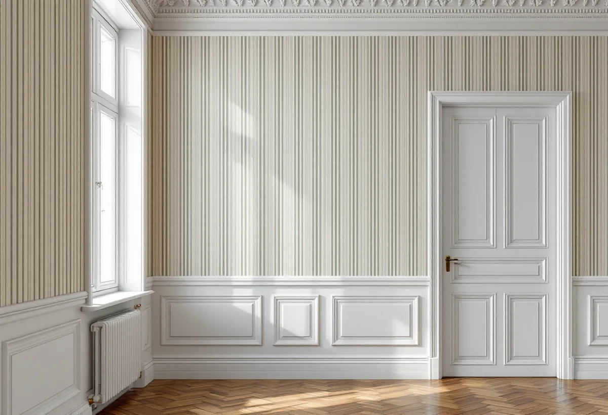
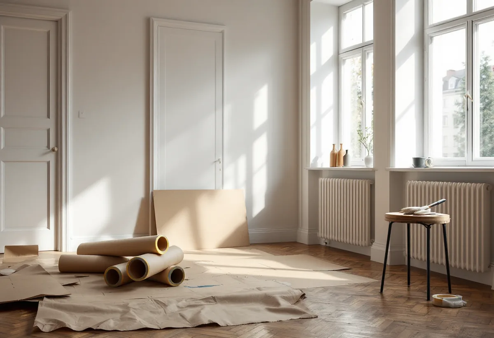

Platsbesök
Vi tittar på väggarna, listerna och om huset är klassat.
De flesta lägenheter på Östermalm är bostadsrätter i äldre stenhus, och många av husen är klassade av Stadsmuseet. Geal Entreprenad AB tapetserar i lägenheter på Östermalm och utgår från att en ny tapet ska passa ett rum som har sin historia.
Stockholms stads områdesfakta för 2024 visar hur dominerande bostadsrätten är. I församlingsområdena Hedvig Eleonora och Oscar fanns tillsammans omkring 17 400 bostäder, och nästan 12 900 av dem var bostadsrätter. Bara ett fåtal var småhus.
För tapetsering betyder det att nästan varje uppdrag sker i en lägenhet i ett flerbostadshus. Det påverkar allt från hur material bärs upp i trapphuset till när på dagen det går att arbeta utan att störa grannarna.

Stadsmuseet klassar byggnader i blått, grönt, gult och grått. Är huset markerat med blått eller grönt i kartan behöver du söka bygglov för åtgärder som annars är bygglovsbefriade.
Boverket förklarar att förvanskningsförbudet gäller vid alla ändringar, såväl exteriört som interiört, och oavsett om åtgärden kräver lov eller anmälan. En ny tapet kräver inget lov, men i ett blått eller grönt hus ska väggfasta detaljer som stuckatur, boaseringar och originalsnickerier inte skadas eller tas bort när rummet görs om.
Enligt bostadsrättslagen ska bostadsrättshavaren på egen bekostnad hålla lägenheten i gott skick, om inte stadgarna säger annat. Väggarnas ytskikt hör till det du själv svarar för, och att byta tapet kräver normalt inte styrelsens tillstånd.
Styrelsens tillstånd behövs däremot för ingrepp i bärande konstruktion och för ändringar av ledningar, ventilation och eldstad. Ska en vägg flyttas i samband med tapetseringen är det därför en annan fråga, och då kontaktar du styrelsen först.
I en äldre våning är väggarna ofta höga och rummen sällan helt raka. Vi lägger ut mönstret från rummets viktigaste vägg, oftast den man ser först, och låter skarvar och mönsterbrott hamna i hörn och bakom dörrar.
Där taket har en stuckaturlist tapetserar vi upp till den och skär kanten rakt i stället för att röra listen. Om väggarna i övrigt behöver lagas eller målas kan du läsa under målare på Östermalm.
I ett stenhus sitter tapeten oftast på puts, men det kan också finnas papp, skivor eller väv från senare renoveringar. Innan vi river lyfter vi en bit i ett hörn eller bakom en dörr och ser hur många lager det finns och hur väl de sitter.
Sitter lagren fast och ytan är jämn kan den nya tapeten ofta sättas direkt efter lagning av skador. Släpper de, eller har de bubblat, tas de ner rum för rum. Putsen under kan då behöva lagas där den spruckit eller lossnat, och sugande partier förlimmas innan tapetseringen.
Många väljer att låta tapeten följa husets tid, med mönster och färger som stämmer med snickerierna och kakelugnarna. Andra vill ha en enkel bakgrund som låter stuckatur och dörrar stå för detaljerna. Båda valen fungerar, så länge de fasta delarna får vara kvar.
Vi tar med provbitar till rummet och sätter upp dem i dagsljus innan du bestämmer dig. En tapet ser ofta annorlunda ut på en hög vägg med ljus från stora fönster än i en provbok.
Underarbetet är det som låter och dammar. Vi skyddar trapphuset när material bärs in, håller dammet inne i lägenheten och planerar slipning och nedtagning till dagtid.
Ska golven slipas i samma veva lägger vi tapetseringen efter slipningen, eller skyddar väggarna noga. Läs mer under golvslipning på Östermalm.

Vi tittar på väggarna, listerna och om huset är klassat.
Underarbete och tapetsering står för sig per rum.
Trapphus, golv, stuckatur och snickerier skyddas.
Gamla lager tas ner eller fästs, väggarna jämnas.
Mönstret läggs ut från rummets viktigaste vägg.
Vi går igenom rummen och lämnar restbitar.
Skatteverket räknar tapetsering inne i en bostadsrätt som rotarbete när arbetet gäller det du ansvarar för enligt stadgarna. Arbete i föreningens gemensamma utrymmen ger inget avdrag.
Avdraget är högst 30 procent av arbetskostnaden, högst 50 000 kronor per person och år och högst 75 000 kronor tillsammans med rutavdrag. Tapet, klister och resor ger inget avdrag. Geal drar av beloppet direkt på fakturan.
Takhöjden, antalet rum, hur mycket väggarna behöver lagas och hur mycket som ska skyddas. En överblick finns under målare. Efter ett gratis platsbesök får du ett skriftligt kostnadsförslag.
Fasad, fönster och invändig målning.
Målare i Stockholm →Takbyte, takbesiktning och plåtarbeten.
Takläggare på Östermalm →Stenstad, Lärkstaden, Diplomatstaden och Gärdet.
Takrenovering på Östermalm →Kulturvärden, förvanskningsförbud och klassning.
Badrumsrenovering på Östermalm →Slå ihop två lägenheter.
Byggföretag på Östermalm →Husets ursprungliga kulör.
Fasadmålning på Östermalm →Gatufasad, gårdsfasad och lovfrågan.
Fasadrenovering på Östermalm →Stenstaden, Lärkstaden och villorna.
Fönsterbyte på Östermalm →Fönster och glas i Gärdets 1930-talshus.
Fönsterrenovering på Östermalm →Mönsterparkett, lack och olja.
Golvläggare på Östermalm →Slipa om eller underhålla lackade golv.
Golvslipning på Östermalm →Stora lägenheter och kulturvärden.
Köksrenovering på Östermalm →Limfärg i taken, dekor och lov.
Målare på Östermalm →Taklandskapet och balkongerna.
Plåtslagare på Östermalm →Lagning av dörrar, paneler och fasta snickerier.
Snickare på Östermalm →Nytt tak med taksäkerhet och snörasskydd.
Takbyte på Östermalm →Renovera hela lägenheten.
Totalrenovering på Östermalm →